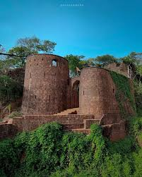
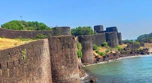
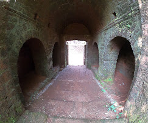

यशवंतगड किल्ला
Location : Click Here For Google Map
- माहिती
- यशवंतगड किल्ला महाराष्ट्र राज्याच्या रायगड जिल्ह्यात स्थित एक ऐतिहासिक किल्ला आहे. हा किल्ला रायगड डोंगर रांगेत वसलेला आहे आणि त्याचा ऐतिहासिक महत्त्व त्याच्या स्थापत्यामुळे आणि त्याच्या भूमिकेच्या दृष्टिकोनातून अतिशय महत्वाचा आहे. यशवंतगड किल्ला मराठा साम्राज्याच्या काळात एक महत्त्वाचा किल्ला होता. किल्ल्याचे संरक्षणात्मक ढंग, दरवाजे, बुरुज आणि किल्ल्याच्या अवशेषांवरून त्याच्या भव्यतेची कल्पना येते.
यशवंतगड किल्ल्याचा इतिहास मराठा साम्राज्याच्या लढाया आणि सामरिक महत्त्वाशी निगडित आहे. किल्ल्याच्या शिखरावरून आसपासचा लँडस्केप, वाडी आणि शेतांमधून दिसणारे दृष्य दर्शवते की किल्ला उंच पर्वतावर स्थित आहे आणि तेथून विस्तृत परिसरावर लक्ष ठेवता येत होते.
आजकाल, यशवंतगड किल्ला पर्यटकांसाठी एक आकर्षक स्थळ बनला आहे. किल्ल्याच्या ऐतिहासिक महत्त्वामुळे, त्यावरून दिसणारे निसर्गाचे सौंदर्य आणि प्राचीन वास्तुकला हे पर्यटकांसाठी एक आकर्षण ठरते. किल्ल्यावर चढाई करणे आणि किल्ल्याच्या भव्यतेचा अनुभव घेणे हे एक रोमांचक आणि शिक्षाप्रद अनुभव आहे.
Explore the historical beauty


